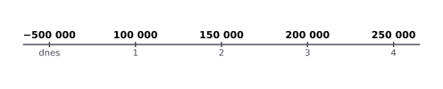
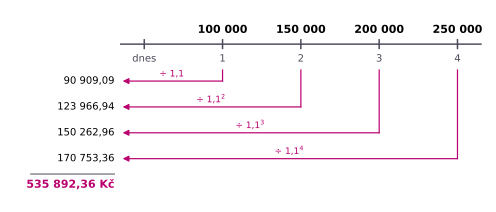

12 Jak firmy přemýšlejí o investování
Studijní materiály
- Dahlquist, J. R., & Knight, R. (2022). Principles of finance. OpenStax, Rice University. https://openstax.org/details/books/principles-finance
- Chapter 16 - How Companies Think about Investing
Výstupy z učení:
- Vysvětlit, jak firma rozhoduje o investicích, a popsat peněžní toky projektu a diskontní sazbu.
- Vypočítat dobu návratnosti a vysvětlit její nedostatky.
- Vypočítat čistou současnou hodnotu (NPV) a rozhodnout podle ní o projektu.
- Vysvětlit vnitřní výnosové procento (IRR), určit ho a popsat jeho úskalí.
- Použít index ziskovosti a diskontovanou dobu návratnosti a vybrat mezi několika projekty.
Značení:
| Symbol | Význam |
|---|---|
| \(CF_0\) | počáteční investice, tedy částka, kterou firma dnes zaplatí |
| \(CF_t\), \(CF\) | peněžní tok projektu v roce \(t\); \(CF\) je tok stejný v každém roce |
| \(r\) | diskontní sazba (náklady kapitálu) |
| \(n\) | doba trvání projektu v letech |
| \(PV\) | současná hodnota budoucích peněžních toků projektu |
| \(DN\) | doba návratnosti |
| \(NPV\) | čistá současná hodnota (net present value) |
| \(IRR\) | vnitřní výnosové procento (internal rate of return) |
| \(PI\) | index ziskovosti (profitability index) |
| \(MIRR\) | modifikované vnitřní výnosové procento |
V týdnech 9 až 11 jsme se dívali očima investora, který kupuje dluhopisy a akcie. Teď se podíváme z druhé strany: jak se rozhoduje firma, která peníze od investorů dostala a má je do něčeho vložit? Koupit nový stroj? Otevřít další pobočku? Vyvinout nový výrobek? Nástroje známe z týdne 8: budoucí peněžní toky diskontujeme a porovnáme s tím, co dnes zaplatíme.
12.1 Investiční rozhodování firmy
12.1.1 Cíl firmy
Hlavním cílem firmy je dlouhodobě zvyšovat svou hodnotu pro vlastníky. Vedení firmy k tomu dělá tři druhy rozhodnutí:
- Investiční rozhodování: do čeho peníze vložit. Říká se mu také kapitálové rozpočtování (capital budgeting).
- Rozhodování o financování: kde peníze vzít, tedy jak zkombinovat vlastní kapitál a dluh.
- Řízení rizik: která rizika firma ponese a proti kterým se zajistí.
Hodnota firmy vzniká hlavně dobrými investicemi. Financování a řízení rizik jim k tomu vytvářejí podmínky. Tato kapitola se proto věnuje investičnímu rozhodování.
Investici, o které firma rozhoduje, budeme říkat projekt. Typický projekt má tři vlastnosti: firma dnes zaplatí velkou částku, peníze se jí vracejí postupně řadu let a rozhodnutí se dá jen těžko vzít zpět. Postup rozhodování má šest kroků:
- Najít investiční příležitosti.
- Odhadnout peněžní toky, které projekt přinese.
- Určit diskontní sazbu.
- Projekt vyhodnotit některou z metod této kapitoly.
- Rozhodnout, zda projekt přijmout.
- Průběžně kontrolovat, jestli se projekt vyvíjí podle plánu.
12.1.2 Peněžní toky projektu
Každý projekt popíšeme jeho peněžními toky na časové ose. Na začátku stojí počáteční investice \(CF_0\): částka, kterou firma zaplatí dnes. V dalších letech projekt přináší peněžní toky \(CF_1\), \(CF_2\) až \(CF_n\). Peněžní tok za rok je rozdíl mezi penězi, které firma díky projektu dostane, a penězi, které kvůli němu zaplatí.
Příklad
Pražírna kávy zvažuje koupi nového pražicího stroje za 500 000 Kč. Díky němu vydělá navíc 100 000 Kč v prvním roce, 150 000 Kč ve druhém, 200 000 Kč ve třetím a 250 000 Kč ve čtvrtém roce, protože jí budou přibývat zákazníci. Po čtyřech letech stroj doslouží.
Má pražírna stroj koupit? Na tomto projektu si postupně ukážeme všechny metody.
Do výpočtu patří jen peněžní toky, které vzniknou kvůli projektu:
- Počítáme rozdíl proti stavu, kdy by firma projekt neudělala. Zajímá nás, kolik vydělá navíc.
- Peníze, které firma už utratila a nedostane je zpět, ať se rozhodne jakkoli, do výpočtu nepatří. Říká se jim utopené náklady (sunk costs). Příkladem je průzkum trhu, který si firma zaplatila před rozhodnutím.
Pro jednoduchost předpokládáme, že počáteční investici firma zaplatí dnes a každý další peněžní tok přijde na konci roku.
Peněžní tok není totéž co účetní zisk. Stroj firma zaplatí hned, v účetnictví se ale jeho cena rozkládá do nákladů několik let (odpisy). Projekty hodnotíme podle peněz, které skutečně přitečou a odtečou.
12.1.3 Diskontní sazba
Peníze na projekt firmě svěřili investoři: vlastníci a věřitelé. Za to chtějí výnos, jaký by při stejném riziku získali jinde. Tomuto výnosu se říká náklady kapitálu (cost of capital). Firma je používá jako diskontní sazbu \(r\) pro hodnocení projektů. Projekt má smysl jen tehdy, když vydělá aspoň tolik, kolik investoři požadují.
- Diskontní sazbě se říká také požadovaný výnos projektu.
- Čím rizikovější projekt, tím vyšší výnos investoři požadují (týden 11), a tím vyšší diskontní sazbu firma použije.
- V příkladech této kapitoly je diskontní sazba vždy zadaná.
12.2 Doba návratnosti
Nejjednodušší otázka zní: za jak dlouho se vložené peníze vrátí? Doba návratnosti (payback period) je doba, za kterou peněžní toky projektu dohromady dosáhnou výše počáteční investice. Když projekt přináší každý rok stejný peněžní tok \(CF\), stačí investici tímto tokem vydělit:
\[ DN = \frac{CF_0}{CF} \]
Příklad
Pekárna koupí novou pec za 600 000 Kč. Pec jí ušetří 150 000 Kč ročně za energie.
\[ DN = \frac{600\,000}{150\,000} = 4 \]
Investice se vrátí za 4 roky.
Když se peněžní toky rok od roku liší, sčítáme je postupně, dokud nedosáhnou výše investice.
Příklad
Pražicí stroj stojí 500 000 Kč a přináší 100 000, 150 000, 200 000 a 250 000 Kč.
| Rok | Peněžní tok | Součet od začátku | Zbývá vrátit |
|---|---|---|---|
| 1 | 100 000 | 100 000 | 400 000 |
| 2 | 150 000 | 250 000 | 250 000 |
| 3 | 200 000 | 450 000 | 50 000 |
| 4 | 250 000 | 700 000 | 0 |
Po třech letech zbývá vrátit 50 000 Kč. Ve čtvrtém roce projekt přinese 250 000 Kč, na zbytek tedy stačí pětina roku:
\[ DN = 3 + \frac{50\,000}{250\,000} = 3{,}2 \]
Investice se vrátí za 3,2 roku. Předpokládáme přitom, že peníze během roku přicházejí rovnoměrně.
Firma, která se podle doby návratnosti rozhoduje, si určí nejdelší dobu, na kterou je ochotná peníze vázat, například tři roky. Projekty s kratší dobou návratnosti přijme, ostatní zamítne.
Doba návratnosti se spočítá rychle a rozumí jí každý. Říká, jak dlouho budou peníze v projektu vázané: čím dřív se vrátí, tím dřív je firma může použít jinde a tím kratší dobu jsou v ohrožení. Má ale vážné nedostatky:
- Nepočítá s časovou hodnotou peněz. Sčítá peníze z různých let, jako by měly stejnou hodnotu.
- Nepočítá s peněžními toky po době návratnosti. Projekt, který potom vydělává dalších deset let, hodnotí stejně jako projekt, který hned skončí.
- Nemá jasné pravidlo pro rozhodnutí. Hranici tří nebo čtyř let si firma volí sama a nic neříká, která je správná.
- Neříká, kolik projekt vydělá.
Tabulka ukazuje tři projekty s počáteční investicí 400 000 Kč. Peněžní toky jsou v tisících Kč.
| Projekt | Rok 1 | Rok 2 | Rok 3 | Rok 4 | Doba návratnosti |
|---|---|---|---|---|---|
| A | 200 | 150 | 50 | 0 | 3 roky |
| B | 50 | 150 | 200 | 0 | 3 roky |
| C | 50 | 150 | 200 | 300 | 3 roky |
Podle doby návratnosti jsou všechny tři projekty stejně dobré. Přitom projekt A vrací peníze dřív než projekt B a projekt C vydělá ve čtvrtém roce dalších 300 000 Kč. Projekty A a B navíc jen vrátí to, co do nich firma vložila, a nic nevydělají.
12.3 Čistá současná hodnota
12.3.1 Výpočet a rozhodovací pravidlo
Počáteční investici platí firma dnes, peníze z projektu dostane až v budoucnu. Porovnat je můžeme teprve tehdy, když budoucí peněžní toky převedeme na současnou hodnotu. Čistá současná hodnota (net present value, NPV) je současná hodnota všech budoucích peněžních toků projektu snížená o počáteční investici:
\[ NPV = -CF_0 + \frac{CF_1}{(1+r)^1} + \frac{CF_2}{(1+r)^2} + \dots + \frac{CF_n}{(1+r)^n} \]
Počáteční investici \(CF_0\) dosazujeme jako kladné číslo a odečítáme ji. Diskontovat ji nemusíme, protože ji firma platí dnes. Součet zlomků je současná hodnota série peněžních toků \(PV\) z týdne 8, stručně tedy \(NPV = PV - CF_0\).
Rozhodovací pravidlo je jednoduché:
- \(NPV > 0\): projekt přijmeme. Vydělá víc, než investoři požadují.
- \(NPV < 0\): projekt zamítneme. Nevydělá ani tolik, kolik investoři požadují.
- \(NPV = 0\): projekt vydělá přesně požadovaný výnos. Hodnota firmy se nezmění.
Příklad
Pražírna hodnotí koupi pražicího stroje za 500 000 Kč. Její náklady kapitálu jsou 10 %. Nejdřív spočítáme současnou hodnotu budoucích peněžních toků:

Od ní odečteme počáteční investici:
\[ \begin{aligned} NPV &= -500\,000 + \frac{100\,000}{1{,}1} + \frac{150\,000}{1{,}1^2} + \frac{200\,000}{1{,}1^3} + \frac{250\,000}{1{,}1^4} \\ &= -500\,000 + 535\,892{,}36 = 35\,892{,}36 \end{aligned} \]
NPV je 35 892,36 Kč. Je kladná, pražírna má stroj koupit.
Co číslo 35 892 Kč znamená? Budoucí peněžní toky ze stroje mají dnes hodnotu 535 892 Kč, pražírna za ně ale zaplatí jen 500 000 Kč. O NPV vzroste hodnota firmy v okamžiku, kdy projekt přijme. Projekt s kladnou NPV zaplatí investorům výnos, který požadují, a ještě něco zbude.
Když projekt přináší každý rok stejnou částku, jsou jeho peněžní toky anuita a současnou hodnotu spočítáme vzorcem z týdne 8.
Příklad
Dopravní firma zvažuje koupi nákladního auta za 2 000 000 Kč. Auto bude 5 let vydělávat 550 000 Kč ročně. Náklady kapitálu jsou 9 %.
\[ \begin{aligned} NPV &= -2\,000\,000 + 550\,000 \times \frac{1 - \dfrac{1}{1{,}09^5}}{0{,}09} \\ &= -2\,000\,000 + 2\,139\,308{,}19 = 139\,308{,}19 \end{aligned} \]
NPV je 139 308,19 Kč, firma má auto koupit.
Kdyby byly náklady kapitálu 12 %, měly by stejné peněžní toky současnou hodnotu jen 1 982 626,91 Kč a NPV by byla −17 373,09 Kč. Firma by auto koupit neměla, přestože auto dohromady vydělá 2 750 000 Kč, tedy víc, než stojí.
12.3.2 NPV a diskontní sazba
Příklad s nákladním autem ukazuje, že NPV závisí na diskontní sazbě. Čím je sazba vyšší, tím menší současnou hodnotu budoucí peněžní toky mají, a NPV klesá. Tabulka a graf ukazují NPV pražicího stroje při různých diskontních sazbách.
| Diskontní sazba | NPV (Kč) |
|---|---|
| 0 % | 200 000 |
| 5 % | 109 736 |
| 10 % | 35 892 |
| 12 % | 10 100 |
| 13 % | −2 093 |
| 15 % | −25 180 |
| 20 % | −76 196 |
Z grafu, kterému se říká profil NPV, plynou tři věci:
- Při sazbě 0 % se nediskontuje. NPV je součet peněžních toků snížený o investici: \(700\,000 - 500\,000 = 200\,000\) Kč.
- Při nízkých sazbách je NPV kladná a projekt se vyplatí, při vysokých je záporná.
- Křivka protíná nulu zhruba u 12,8 %. Tato sazba se nazývá vnitřní výnosové procento a věnuje se jí další část.
Diskontní sazbu firma jen odhaduje. Profil NPV ukazuje, jak moc na odhadu záleží: pražicí stroj se vyplatí, dokud jsou náklady kapitálu nižší než zhruba 12,8 %.
12.3.3 Výhody a nevýhody
NPV nemá nedostatky doby návratnosti a přidává další výhody:
- počítá s časovou hodnotou peněz,
- počítá se všemi peněžními toky projektu,
- má jasné pravidlo: přijmout projekty s kladnou NPV,
- zohledňuje riziko, protože rizikovější projekt diskontujeme vyšší sazbou,
- vychází v korunách a říká přímo, o kolik projekt zvýší hodnotu firmy.
NPV je proto nejlepší z metod této kapitoly a ostatní metody s ní budeme porovnávat. Její slabinou jsou vstupy. Budoucí peněžní toky i diskontní sazba jsou jen odhady a výsledek je na ně citlivý. Kladná NPV na papíře nezaručuje, že projekt skutečně vydělá.
Vraťme se k projektům A, B a C z části o době návratnosti. Při diskontní sazbě 10 % mají NPV zhruba −57 000 Kč, −80 000 Kč a +125 000 Kč. Přijmout se vyplatí jen projekt C.
12.4 Vnitřní výnosové procento
Manažeři často chtějí slyšet výsledek v procentech: kolik procent ročně projekt vynáší? Odpovídá na to vnitřní výnosové procento (internal rate of return, IRR). Je to diskontní sazba, při které je NPV projektu rovna nule:
\[ 0 = -CF_0 + \frac{CF_1}{(1+IRR)^1} + \frac{CF_2}{(1+IRR)^2} + \dots + \frac{CF_n}{(1+IRR)^n} \]
V grafu profilu NPV je IRR místo, kde křivka protíná vodorovnou osu. IRR říká, jaký roční výnos projekt přináší z peněz, které jsou v něm vložené. Rozhodovací pravidlo porovnává IRR s náklady kapitálu:
- \(IRR > r\): projekt přijmeme. Vynáší víc, než investoři požadují.
- \(IRR < r\): projekt zamítneme.
U běžného projektu, který začíná výdajem a potom už jen vydělává, vede toto pravidlo vždy ke stejnému rozhodnutí jako NPV. Když je IRR vyšší než náklady kapitálu, je NPV kladná, a naopak.
IRR už známe pod jiným jménem. Výnos do splatnosti dluhopisu z týdne 9 je IRR investice do dluhopisu: sazba, při které se současná hodnota kupónů a jmenovité hodnoty rovná ceně.
12.4.1 Jak IRR najít
Když projekt přinese jediný peněžní tok, spočítáme IRR stejně jako úrokovou sazbu v týdnu 8.
Příklad
Firma koupí pozemek za 4 000 000 Kč a za 3 roky ho prodá za 5 000 000 Kč. Hledáme sazbu, při které má 5 000 000 Kč za tři roky současnou hodnotu 4 000 000 Kč:
\[ IRR = \left(\frac{5\,000\,000}{4\,000\,000}\right)^{1/3} - 1 = 1{,}25^{1/3} - 1 = 0{,}0772 = 7{,}72\% \]
Při nákladech kapitálu 6 % firma projekt přijme, při 9 % ho zamítne.
Když má projekt víc peněžních toků, rovnici obvykle vzorcem vyřešit nelze. Zkoušíme proto různé sazby. U běžného projektu platí: je-li NPV kladná, sazbu zvýšíme, je-li záporná, sazbu snížíme.
Příklad
Jaké je IRR pražicího stroje? Při sazbě 10 % vyšla NPV 35 892 Kč. Je kladná, IRR je tedy vyšší než 10 %. Zkusíme 12 %:
\[ \begin{aligned} NPV &= -500\,000 + \frac{100\,000}{1{,}12} + \frac{150\,000}{1{,}12^2} + \frac{200\,000}{1{,}12^3} + \frac{250\,000}{1{,}12^4} \\ &= 10\,100 \end{aligned} \]
NPV je pořád kladná, sazbu zvýšíme na 13 %:
\[ \begin{aligned} NPV &= -500\,000 + \frac{100\,000}{1{,}13} + \frac{150\,000}{1{,}13^2} + \frac{200\,000}{1{,}13^3} + \frac{250\,000}{1{,}13^4} \\ &= -2\,093 \end{aligned} \]
Teď je NPV záporná. IRR leží mezi 12 % a 13 %, blíž ke 13 %. Přesný výpočet dává 12,83 %. Pražírna má náklady kapitálu 10 %, IRR je vyšší a projekt přijme. Ke stejnému závěru vedla i kladná NPV.
V Excelu počítá IRR funkce MÍRA.VÝNOSNOSTI (anglicky IRR), NPV funkce ČISTÁ.SOUČHODNOTA (NPV). Ta diskontuje už první zadanou hodnotu o jeden rok, počáteční investici proto odečtěte zvlášť: =ČISTÁ.SOUČHODNOTA(10%; B2:E2) - 500000.
12.4.2 Úskalí IRR
IRR je oblíbené, protože procentům rozumí každý a dají se snadno porovnat s úrokem z úvěru nebo s výnosem jiných investic. Má ale tři úskalí, která NPV nemá.
Projekt může mít víc IRR. Když se znaménko peněžních toků změní víckrát než jednou, například protože projekt končí velkým výdajem, může rovnice pro IRR mít dvě řešení.
Příklad
Těžební firma otevře lom za 100 mil. Kč. Za rok prodá vytěžený kámen za 260 mil. Kč a za dva roky zaplatí 165 mil. Kč za rekultivaci krajiny.
NPV je nulová při sazbě 10 % i při sazbě 50 %, projekt má tedy dvě IRR. Má firma s náklady kapitálu 12 % projekt přijmout? Pravidlo pro IRR odpověď nedá: 12 % je víc než jedno IRR a míň než druhé. NPV odpověď dá:
\[ NPV = -100 + \frac{260}{1{,}12} - \frac{165}{1{,}12^2} = -100 + 232{,}1 - 131{,}5 = 0{,}6 \]
NPV je 0,6 mil. Kč, tedy kladná, a projekt se vyplatí.
IRR nevidí velikost projektu. Výnos 50 % z malé částky může být méně peněz než výnos 30 % z velké.
Příklad
Firma může uskutečnit jen jeden ze dvou projektů. Oba trvají jeden rok, náklady kapitálu jsou 10 %. Částky jsou v Kč.
| Projekt | Investice dnes | Příjem za rok | IRR | NPV |
|---|---|---|---|---|
| malý | 100 000 | 150 000 | 50 % | 36 364 |
| velký | 1 000 000 | 1 300 000 | 30 % | 181 818 |
Malý projekt má vyšší IRR, velký ale zvýší hodnotu firmy pětkrát víc. Firma má zvolit velký projekt. Stejně jako IRR by svedl i index ziskovosti: malý projekt ho má 1,36, velký 1,18.
IRR předpokládá, že peníze z projektu firma znovu investuje se stejným výnosem. Vyjde-li IRR 40 %, počítá se s tím, že i peníze, které projekt průběžně vydělá, ponesou dál 40 %. Tak výnosný další projekt ale firma mít nemusí.
Pro jeden běžný projekt je IRR spolehlivé a hodí se k NPV jako doplněk. Když se IRR a NPV neshodnou, rozhoduje NPV.
12.5 Další metody a výběr mezi projekty
12.5.1 Index ziskovosti
Index ziskovosti (profitability index, PI) pracuje se stejnými čísly jako NPV, jen je místo odečtení dělí. Říká, kolik korun současné hodnoty přinese jedna investovaná koruna:
\[ PI = \frac{PV}{CF_0} = \frac{NPV + CF_0}{CF_0} \]
kde \(PV\) je současná hodnota budoucích peněžních toků projektu. Když je \(PI > 1\), projekt přijmeme, když je \(PI < 1\), zamítneme ho. Rozhodnutí je vždy stejné jako podle NPV: index ziskovosti je větší než 1 právě tehdy, když je NPV kladná.
Příklad
Budoucí peněžní toky pražicího stroje mají současnou hodnotu 535 892,36 Kč, stroj stojí 500 000 Kč.
\[ PI = \frac{535\,892{,}36}{500\,000} = 1{,}07 \]
Každá investovaná koruna přinese 1,07 Kč v současné hodnotě. Index je větší než 1, projekt se vyplatí.
Index ziskovosti se hodí hlavně k seřazení projektů, když firma nemá peníze na všechny. Ukážeme to v části o omezeném rozpočtu.
12.5.2 Diskontovaná doba návratnosti
Diskontovaná doba návratnosti (discounted payback period) odstraňuje první nedostatek doby návratnosti: sčítá diskontované peněžní toky. Říká, za jak dlouho se investice vrátí i s výnosem, který investoři požadují.
Příklad
Pražicí stroj stojí 500 000 Kč, diskontní sazba je 10 %.
| Rok | Peněžní tok | Diskontovaný tok | Součet od začátku | Zbývá vrátit |
|---|---|---|---|---|
| 1 | 100 000 | 90 909 | 90 909 | 409 091 |
| 2 | 150 000 | 123 967 | 214 876 | 285 124 |
| 3 | 200 000 | 150 263 | 365 139 | 134 861 |
| 4 | 250 000 | 170 753 | 535 892 | 0 |
Po třech letech zbývá vrátit 134 861 Kč, čtvrtý rok přinese v současné hodnotě 170 753 Kč:
\[ 3 + \frac{134\,861}{170\,753} = 3{,}79 \]
Diskontovaná doba návratnosti je 3,79 roku. Obyčejná doba návratnosti vyšla 3,2 roku.
Diskontovaná doba návratnosti je vždy delší než obyčejná, protože diskontované peněžní toky jsou menší. Modrá čára v grafu končí na hodnotě 35 892 Kč, což je NPV projektu. Projekt se zápornou NPV se proto s požadovaným výnosem nevrátí nikdy. Ostatní nedostatky zůstávají: metoda nepočítá s peněžními toky po době návratnosti a hranici pro přijetí si firma volí sama.
12.5.3 Modifikované vnitřní výnosové procento
Modifikované vnitřní výnosové procento (modified internal rate of return, MIRR) opravuje dvě úskalí IRR: má vždy jen jedno řešení a nepředpokládá, že firma peníze znovu investuje s výnosem IRR. Počítá s tím, že je investuje s výnosem rovným nákladům kapitálu. U projektu s jediným výdajem na začátku má postup tři kroky:
- Všechny kladné peněžní toky převedeme na budoucí hodnotu ke konci projektu. Úročíme je náklady kapitálu.
- Budoucí hodnoty sečteme.
- Spočítáme roční výnos, při kterém z počáteční investice vyroste tento součet.
\[ MIRR = \left(\frac{FV}{CF_0}\right)^{1/n} - 1 \]
kde \(FV\) je součet budoucích hodnot kladných peněžních toků na konci projektu.
Příklad
Pražicí stroj stojí 500 000 Kč, náklady kapitálu jsou 10 %. První peněžní tok se do konce čtvrtého roku úročí tři roky, druhý dva roky, třetí jeden rok:
\[ \begin{aligned} FV &= 100\,000 \times 1{,}1^3 + 150\,000 \times 1{,}1^2 \\ &\quad + 200\,000 \times 1{,}1 + 250\,000 \\ &= 133\,100 + 181\,500 + 220\,000 + 250\,000 = 784\,600 \end{aligned} \]
\[ MIRR = \left(\frac{784\,600}{500\,000}\right)^{1/4} - 1 = 1{,}5692^{1/4} - 1 = 11{,}92\% \]
MIRR je 11,92 %. Je vyšší než náklady kapitálu 10 %, projekt se vyplatí. Je ale nižší než IRR 12,83 %, protože počítá s nižším výnosem z průběžně vydělaných peněz.
12.5.4 Vzájemně se vylučující projekty
Zatím jsme rozhodovali, zda jeden projekt přijmout, nebo zamítnout. Projekty, které spolu nesouvisejí a o každém lze rozhodnout zvlášť, se nazývají nezávislé: firma přijme všechny s kladnou NPV.
Jindy si firma musí vybrat. Pražírna potřebuje jen jeden pražicí stroj a rozhoduje se mezi menším a větším. Koupí-li jeden, druhý už nekoupí. Takové projekty se nazývají vzájemně se vylučující (mutually exclusive). Platí pro ně pravidlo: vybereme projekt s nejvyšší NPV.
Cílem je zvýšit hodnotu firmy co nejvíc, a NPV říká přímo, o kolik ji projekt zvýší. Podle IRR ani indexu ziskovosti vybírat nelze, protože nevidí velikost projektu. Ukázal to příklad s malým a velkým projektem v části o úskalích IRR.
NPV lze přímo porovnávat jen u projektů, které trvají stejně dlouho. Porovnání projektů s různou dobou trvání je nad rámec tohoto předmětu.
12.5.5 Omezený rozpočet
Firma často najde víc projektů s kladnou NPV, než kolik dokáže zaplatit. Chce pak vybrat takovou skupinu projektů, která se vejde do rozpočtu a má dohromady nejvyšší NPV. Pomůže index ziskovosti: říká, kolik hodnoty projekt přinese na jednu korunu z omezeného rozpočtu. Projekty proto seřadíme podle indexu ziskovosti od nejvyššího a přijímáme je, dokud rozpočet stačí.
Tento postup vede jistě k nejlepšímu výběru, když vybrané projekty rozpočet právě vyčerpají. Zbude-li část rozpočtu nevyužitá, je potřeba porovnat i jiné kombinace.
Příklad
Firma má na investice 100 mil. Kč a zvažuje pět projektů. Všechny mají kladnou NPV, dohromady by ale stály 200 mil. Kč. Částky jsou v mil. Kč.
| Projekt | Investice | NPV | PI |
|---|---|---|---|
| A | 50 | 20 | 1,40 |
| B | 40 | 12 | 1,30 |
| C | 30 | 11 | 1,37 |
| D | 20 | 9 | 1,45 |
| E | 60 | 21 | 1,35 |
Index ziskovosti počítáme z NPV, u projektu A je to \((20 + 50) / 50 = 1{,}40\). Pořadí podle indexu je D, A, C, E, B. Projekty D, A a C stojí dohromady \(20 + 50 + 30 = 100\) mil. Kč a rozpočet právě vyčerpají. Jejich NPV je \(9 + 20 + 11 = 40\) mil. Kč.
Kdyby firma vybírala podle samotné NPV, začala by projektem E. Projekt A se k němu už nevejde, další v pořadí je projekt B. Celková NPV by byla jen \(21 + 12 = 33\) mil. Kč.
12.5.6 Porovnání metod
Tabulka shrnuje, zda metoda počítá s časovou hodnotou peněz, zda počítá se všemi peněžními toky projektu a kdy podle ní projekt přijmeme.
| Metoda | Časová hodnota | Všechny toky | Projekt přijmeme, když |
|---|---|---|---|
| Doba návratnosti | ne | ne | je kratší než limit firmy |
| Diskontovaná doba návratnosti | ano | ne | je kratší než limit firmy |
| NPV | ano | ano | \(NPV > 0\) |
| IRR | ano | ano | \(IRR > r\) |
| Index ziskovosti | ano | ano | \(PI > 1\) |
Doba návratnosti vychází v letech, NPV v korunách, IRR v procentech a index ziskovosti je poměr bez jednotky.
A co firmy skutečně používají? V průzkumu mezi 392 finančními řediteli severoamerických firem uvedlo 75,7 % z nich, že IRR používají vždy nebo téměř vždy, a 74,9 % totéž řeklo o NPV. Z ostatních metod byla nejčastější doba návratnosti s 56,7 %, a to přes všechny své nedostatky. Oblíbená byla hlavně v menších firmách. Firmy tedy většinou nepoužívají jednu metodu, ale několik vedle sebe.
Zdroj: Graham, J. R., & Harvey, C. R. (2002). How do CFOs make capital budgeting and capital structure decisions? Journal of Applied Corporate Finance, 15(1). Průzkum proběhl v roce 1999.
12.6 Shrnutí
- Cílem firmy je dlouhodobě zvyšovat svou hodnotu. Investiční rozhodování (kapitálové rozpočtování) hledá projekty, které hodnotu firmy zvýší.
- Projekt popisuje počáteční investice a peněžní toky v dalších letech. Diskontní sazbou jsou náklady kapitálu, tedy výnos, který požadují investoři.
- Doba návratnosti říká, za jak dlouho se investice vrátí. Je jednoduchá, ale nepočítá s časovou hodnotou peněz ani s peněžními toky po době návratnosti.
- NPV je současná hodnota budoucích peněžních toků snížená o počáteční investici. Projekt s kladnou NPV zvyšuje hodnotu firmy a přijmeme ho.
- U projektu, který začíná výdajem a potom už jen vydělává, platí: čím vyšší diskontní sazba, tím nižší NPV.
- IRR je diskontní sazba, při které je NPV nulová. Projekt přijmeme, když je IRR vyšší než náklady kapitálu.
- IRR může mít víc řešení a nevidí velikost projektu. Když se IRR a NPV neshodnou, rozhoduje NPV.
- Index ziskovosti je současná hodnota budoucích peněžních toků dělená investicí. Hodí se k seřazení projektů při omezeném rozpočtu.
- Diskontovaná doba návratnosti sčítá diskontované peněžní toky, a je proto delší než obyčejná. S peněžními toky po době návratnosti ale také nepočítá.
- Ze vzájemně se vylučujících projektů vybíráme ten s nejvyšší NPV.
| Výpočet | Vzorec |
|---|---|
| Doba návratnosti, stejné toky | \(DN = \dfrac{CF_0}{CF}\) |
| Čistá současná hodnota | \(NPV = -CF_0 + \dfrac{CF_1}{(1+r)^1} + \dots + \dfrac{CF_n}{(1+r)^n}\) |
| Vnitřní výnosové procento | \(0 = -CF_0 + \dfrac{CF_1}{(1+IRR)^1} + \dots + \dfrac{CF_n}{(1+IRR)^n}\) |
| IRR při jediném peněžním toku | \(IRR = \left(\dfrac{CF_n}{CF_0}\right)^{1/n} - 1\) |
| Index ziskovosti | \(PI = \dfrac{PV}{CF_0} = \dfrac{NPV + CF_0}{CF_0}\) |
| Modifikované IRR | \(MIRR = \left(\dfrac{FV}{CF_0}\right)^{1/n} - 1\) |
12.7 Příklady k procvičení
Pokud příklad neuvádí jinak, firma platí počáteční investici dnes, další peněžní toky přicházejí na konci roku a počítáme se složeným úročením. U doby návratnosti předpokládáme, že peníze během roku přicházejí rovnoměrně.
12.7.1 Doba návratnosti
Firma investuje 840 000 Kč do projektu, který přináší 240 000 Kč ročně. Jaká je doba návratnosti?
Zlomek je obráceně. Investici dělte ročním peněžním tokem.
Zobrazit řešení
\[ DN = \frac{840\,000}{240\,000} = 3{,}5 \]
Investice se vrátí za 3,5 roku.
Projekt vyžaduje investici 300 000 Kč. V jednotlivých letech přinese 80 000 Kč, 100 000 Kč, 90 000 Kč a 120 000 Kč. Jaká je doba návratnosti?
Investice se vrátí už během čtvrtého roku. Zbývajících 30 000 Kč vydělte peněžním tokem čtvrtého roku.
Zbývajících 30 000 Kč dělte peněžním tokem čtvrtého roku, ne investicí.
Peněžní toky nejsou každý rok stejné, průměrem je nahradit nelze. Sčítejte je postupně rok po roce.
Zobrazit řešení
Po třech letech projekt vrátil \(80\,000 + 100\,000 + 90\,000 = 270\,000\) Kč a zbývá 30 000 Kč. Čtvrtý rok přinese 120 000 Kč:
\[ DN = 3 + \frac{30\,000}{120\,000} = 3{,}25 \]
Investice se vrátí za 3,25 roku.
Každý z projektů A a B vyžaduje investici 200 000 Kč. Projekt A přinese v jednotlivých letech 100 000 Kč, 100 000 Kč a 20 000 Kč. Projekt B přinese v prvním roce 50 000 Kč a potom tři roky po 100 000 Kč. Jaká je doba návratnosti obou projektů?
Zobrazit řešení
Projekt A vrátí investici přesně po dvou letech: \(100\,000 + 100\,000 = 200\,000\) Kč.
Projekt B vrátí po dvou letech 150 000 Kč a zbývá 50 000 Kč. Třetí rok přinese 100 000 Kč:
\[ DN_B = 2 + \frac{50\,000}{100\,000} = 2{,}5 \]
Podle doby návratnosti je lepší projekt A. Projekt B ale vydělá celkem 350 000 Kč, projekt A jen 220 000 Kč. Doba návratnosti nepočítá s peněžními toky, které přijdou později.
12.7.2 Čistá současná hodnota
Firma investuje 150 000 Kč do projektu, který přinese 50 000 Kč za rok, 60 000 Kč za dva roky a 70 000 Kč za tři roky. Diskontní sazba je 8 %. Jaká je NPV projektu?
To je současná hodnota budoucích peněžních toků. Odečtěte od ní počáteční investici.
Peněžní toky jste jen sečetli a odečetli investici. Každý peněžní tok nejdřív diskontujte.
Zobrazit řešení
\[ \begin{aligned} NPV &= -150\,000 + \frac{50\,000}{1{,}08} + \frac{60\,000}{1{,}08^2} + \frac{70\,000}{1{,}08^3} \\ &= -150\,000 + 46\,296{,}30 + 51\,440{,}33 + 55\,568{,}26 \\ &= 3\,304{,}88 \end{aligned} \]
NPV je 3 304,88 Kč. Je kladná, projekt se vyplatí.
Firma investuje 100 000 Kč do projektu, který tři roky přináší 30 000 Kč ročně. Diskontní sazba je 10 %. Jaká je NPV projektu?
Současná hodnota peněžních toků je nižší než investice. NPV je záporná.
To je současná hodnota budoucích peněžních toků. Odečtěte od ní počáteční investici.
Peněžní toky jste jen sečetli a odečetli investici. Každý peněžní tok nejdřív diskontujte.
Zobrazit řešení
\[ \begin{aligned} NPV &= -100\,000 + \frac{30\,000}{1{,}1} + \frac{30\,000}{1{,}1^2} + \frac{30\,000}{1{,}1^3} \\ &= -100\,000 + 27\,272{,}73 + 24\,793{,}39 + 22\,539{,}44 \\ &= -25\,394{,}44 \end{aligned} \]
NPV je −25 394,44 Kč, firma má projekt zamítnout. Je to vidět i bez počítání: projekt přinese celkem 90 000 Kč, tedy méně, než stojí.
Firma investuje 200 000 Kč do projektu, který v jednotlivých letech přinese 70 000 Kč, 80 000 Kč, 90 000 Kč a 100 000 Kč. Diskontní sazba je 12 %. Jaká je NPV projektu?
To je současná hodnota budoucích peněžních toků. Odečtěte od ní počáteční investici.
Peněžní toky jste jen sečetli a odečetli investici. Každý peněžní tok nejdřív diskontujte.
Zobrazit řešení
\[ \begin{aligned} NPV &= -200\,000 + \frac{70\,000}{1{,}12} + \frac{80\,000}{1{,}12^2} + \frac{90\,000}{1{,}12^3} + \frac{100\,000}{1{,}12^4} \\ &= -200\,000 + 62\,500 + 63\,775{,}51 \\ &\quad + 64\,060{,}22 + 63\,551{,}81 \\ &= 53\,887{,}54 \end{aligned} \]
NPV je 53 887,54 Kč.
Firma investuje 1 200 000 Kč do výrobní linky, která bude 10 let přinášet 180 000 Kč ročně. Diskontní sazba je 7 %. Jaká je NPV projektu?
Takhle vychází předlhůtní anuita. Peněžní toky přicházejí na konci roku.
Peněžní toky jste jen sečetli a odečetli investici. Nejdřív je diskontujte.
To je současná hodnota budoucích peněžních toků. Odečtěte od ní počáteční investici.
Zobrazit řešení
Deset stejných peněžních toků na konci roku je polhůtní anuita:
\[ \begin{aligned} NPV &= -1\,200\,000 + 180\,000 \times \frac{1 - \dfrac{1}{1{,}07^{10}}}{0{,}07} \\ &= -1\,200\,000 + 1\,264\,244{,}68 = 64\,244{,}68 \end{aligned} \]
NPV je 64 244,68 Kč.
Projekt vyžaduje investici 800 000 Kč a pět let přináší 220 000 Kč ročně. Jaká je jeho NPV při diskontní sazbě 8 % a jaká při 14 %?
Zobrazit řešení
Peněžní toky jsou polhůtní anuita. Při sazbě 8 %:
\[ \begin{aligned} NPV &= -800\,000 + 220\,000 \times \frac{1 - \dfrac{1}{1{,}08^5}}{0{,}08} \\ &= -800\,000 + 878\,396{,}21 = 78\,396{,}21 \end{aligned} \]
Při sazbě 14 %:
\[ \begin{aligned} NPV &= -800\,000 + 220\,000 \times \frac{1 - \dfrac{1}{1{,}14^5}}{0{,}14} \\ &= -800\,000 + 755\,277{,}81 = -44\,722{,}19 \end{aligned} \]
Při sazbě 8 % se projekt vyplatí, při 14 % ne. IRR projektu leží mezi těmito sazbami.
12.7.3 Vnitřní výnosové procento
Firma investuje 250 000 Kč do vývoje výrobku. Za 5 let výrobek prodá za 400 000 Kč, jiné peněžní toky projekt nemá. Jaké je IRR projektu?
Takhle vychází jednoduché úročení. Podíl částek odmocněte: \(1{,}6^{1/5} - 1\).
To je výnos za celých 5 let. Přepočítejte ho na jeden rok.
Zobrazit řešení
\[ IRR = \left(\frac{400\,000}{250\,000}\right)^{1/5} - 1 = 1{,}6^{1/5} - 1 = 0{,}0986 = 9{,}86\% \]
Firma investuje 50 000 Kč do projektu, který v jednotlivých letech přinese 15 000 Kč, 20 000 Kč a 25 000 Kč. Spočítejte NPV při diskontní sazbě 8 % a 9 %. Co z toho plyne pro IRR?
Zobrazit řešení
Při sazbě 8 %:
\[ NPV = -50\,000 + \frac{15\,000}{1{,}08} + \frac{20\,000}{1{,}08^2} + \frac{25\,000}{1{,}08^3} = 881{,}47 \]
Při sazbě 9 %:
\[ NPV = -50\,000 + \frac{15\,000}{1{,}09} + \frac{20\,000}{1{,}09^2} + \frac{25\,000}{1{,}09^3} = -100{,}35 \]
Při 8 % je NPV kladná, při 9 % záporná. IRR leží mezi těmito sazbami, mnohem blíž k 9 %. Přesný výpočet dává 8,90 %.
Bonus. Firma investuje 120 000 Kč do projektu, který v jednotlivých letech přinese 40 000 Kč, 50 000 Kč, 60 000 Kč a 70 000 Kč. Jaké je IRR projektu? Výsledek zaokrouhlete na dvě desetinná místa. Přesný výsledek najdete jen pomocí softwaru, například Excelu.
Zobrazit řešení
Hledáme sazbu, při které je NPV nulová. Při \(r = 26\%\):
\[ -120\,000 + \frac{40\,000}{1{,}26} + \frac{50\,000}{1{,}26^2} + \frac{60\,000}{1{,}26^3} + \frac{70\,000}{1{,}26^4} = 1\,007{,}03 \]
NPV je kladná, sazba musí být vyšší. Při \(r = 27\%\):
\[ -120\,000 + \frac{40\,000}{1{,}27} + \frac{50\,000}{1{,}27^2} + \frac{60\,000}{1{,}27^3} + \frac{70\,000}{1{,}27^4} = -1\,304{,}37 \]
IRR leží mezi 26 % a 27 %. Přesnou sazbu najde software. V Excelu zapište peněžní toky −120 000, 40 000, 50 000, 60 000 a 70 000 do buněk A1 až A5 a použijte funkci =MÍRA.VÝNOSNOSTI(A1:A5).
IRR je 26,43 %.
12.7.4 Index ziskovosti a diskontovaná doba návratnosti
Projekt vyžaduje investici 2 000 000 Kč a jeho NPV je 300 000 Kč. Jaký je index ziskovosti?
To je NPV dělená investicí. V čitateli má být současná hodnota budoucích peněžních toků, tedy NPV zvýšená o investici.
Zobrazit řešení
Současná hodnota budoucích peněžních toků je \(300\,000 + 2\,000\,000 = 2\,300\,000\) Kč:
\[ PI = \frac{2\,300\,000}{2\,000\,000} = 1{,}15 \]
Firma investuje 400 000 Kč do projektu, který v jednotlivých letech přinese 150 000 Kč, 200 000 Kč a 180 000 Kč. Diskontní sazba je 9 %. Jaký je index ziskovosti?
Peněžní toky nejdřív diskontujte, teprve potom je vydělte investicí.
To je NPV dělená investicí. V čitateli má být současná hodnota budoucích peněžních toků.
Zobrazit řešení
\[ \begin{aligned} PV &= \frac{150\,000}{1{,}09} + \frac{200\,000}{1{,}09^2} + \frac{180\,000}{1{,}09^3} \\ &= 137\,614{,}68 + 168\,336{,}00 + 138\,993{,}03 = 444\,943{,}70 \end{aligned} \]
\[ PI = \frac{444\,943{,}70}{400\,000} = 1{,}11 \]
Index je větší než 1, projekt se vyplatí. Jeho NPV je 44 943,70 Kč.
Projekt vyžaduje investici 200 000 Kč a tři roky přináší 90 000 Kč ročně. Diskontní sazba je 10 %. Jaká je doba návratnosti a jaká diskontovaná doba návratnosti?
Zobrazit řešení
Doba návratnosti:
\[ DN = \frac{200\,000}{90\,000} = 2{,}22 \]
Pro diskontovanou dobu návratnosti peněžní toky nejdřív diskontujeme:
| Rok | Peněžní tok | Diskontovaný tok | Součet od začátku | Zbývá vrátit |
|---|---|---|---|---|
| 1 | 90 000 | 81 818 | 81 818 | 118 182 |
| 2 | 90 000 | 74 380 | 156 198 | 43 802 |
| 3 | 90 000 | 67 618 | 223 817 | 0 |
\[ 2 + \frac{43\,802}{67\,618} = 2{,}65 \]
Diskontovaná doba návratnosti je 2,65 roku, tedy delší než obyčejná.
12.7.5 Výběr mezi projekty
Firma vybírá jeden ze dvou strojů. Stroj A stojí 300 000 Kč a dva roky přináší 200 000 Kč ročně. Stroj B stojí 600 000 Kč a dva roky přináší 380 000 Kč ročně. Diskontní sazba je 10 %. Jaká je NPV obou strojů a který má firma koupit?
Zobrazit řešení
\[ \begin{aligned} NPV_A &= -300\,000 + \frac{200\,000}{1{,}1} + \frac{200\,000}{1{,}1^2} = 47\,107{,}44 \\[1ex] NPV_B &= -600\,000 + \frac{380\,000}{1{,}1} + \frac{380\,000}{1{,}1^2} = 59\,504{,}13 \end{aligned} \]
Firma má koupit stroj B, protože má vyšší NPV. Stroj A má přitom vyšší IRR (21,5 % proti 17,3 %). U vzájemně se vylučujících projektů ale rozhoduje NPV.
Firma má na investice 60 mil. Kč a zvažuje čtyři projekty. Jakou nejvyšší celkovou NPV může získat?
| Projekt | Investice (mil. Kč) | NPV (mil. Kč) |
|---|---|---|
| A | 40 | 12 |
| B | 20 | 8 |
| C | 20 | 7 |
| D | 20 | 6,4 |
To je NPV projektů A a B, které mají nejvyšší NPV. Projekt A ale spotřebuje dvě třetiny rozpočtu. Seřaďte projekty podle indexu ziskovosti.
Zobrazit řešení
Spočítáme index ziskovosti každého projektu, například u projektu A \((12 + 40) / 40 = 1{,}30\):
| Projekt | A | B | C | D |
|---|---|---|---|---|
| PI | 1,30 | 1,40 | 1,35 | 1,32 |
Pořadí podle indexu je B, C, D, A. Projekty B, C a D stojí dohromady 60 mil. Kč a rozpočet právě vyčerpají:
\[ 8 + 7 + 6{,}4 = 21{,}4 \]
Nejvyšší celková NPV je 21,4 mil. Kč.